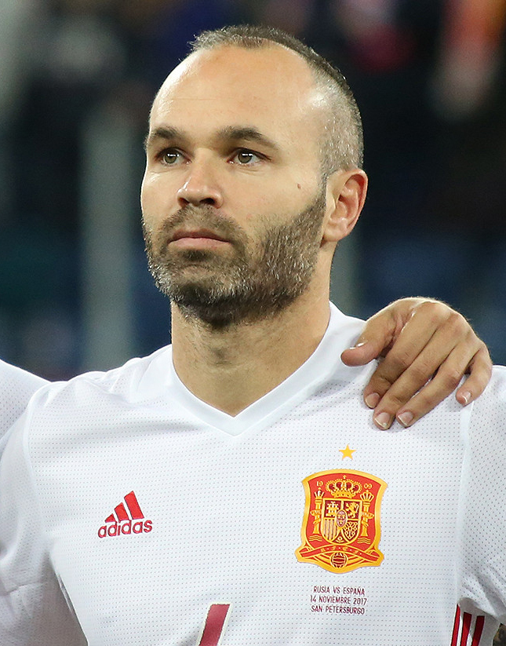

Iniesta corona a España campeona del mundo en el minuto 116
Una media volea del manchego ante Holanda dio a España su primer título mundial en Soccer City. Ochenta años de fatalismo terminaron en una sola jugada. Las plazas del país entero fueron un solo grito.

En el minuto ciento dieciséis de la final, cuando el fantasma de los penaltis rondaba ya Soccer City, Cesc Fàbregas encontró a Andrés Iniesta en la frontal del área holandesa. El manchego dejó botar el balón, ajustó el cuerpo y cruzó una media volea que el guardameta Stekelenburg solo pudo ver pasar. Uno a cero, y ochenta años de historia cambiaron de signo en un estadio de Johannesburgo. España, que jamás había pisado siquiera una final, es desde esta noche campeona del mundo, y las plazas de todo el país, de Cibeles a la última fuente de pueblo, son a esta hora un solo grito.
La final fue áspera hasta el límite: el árbitro inglés Webb repartió tarjetas por docenas, y una entrada del holandés De Jong al pecho de Xabi Alonso quedará entre las imágenes duras del torneo. Holanda tuvo su ocasión en las botas de Robben, dos veces mano a mano, y dos veces Iker Casillas salvó a España, la segunda con el pie, milagrosamente. En la prórroga, la expulsión de Heitinga inclinó el campo, y el gol llegó cuando ya se preparaba la tanda de penaltis. Las cámaras sorprendieron entonces al capitán Casillas llorando antes del pitido final, con el partido aún vivo: pocas veces unas lágrimas contaron mejor ochenta años de espera.
Porque esta Copa no se entiende sin la historia que la precede. España fue durante décadas «la furia», un fútbol de arrebato que se estrellaba una y otra vez en los cuartos de final, hasta convertir el fatalismo en identidad: el cuarto puesto de 1950 como techo, las eliminatorias perdidas por un poste o un penalti, la certeza resignada de que ganar era cosa de otros. La Eurocopa de hace dos años empezó a desmontar el maleficio, y este equipo de toque paciente, criado en la posesión del balón y en la pausa, lo ha enterrado esta noche en Johannesburgo: seis victorias seguidas después de perder el primer partido, algo nunca visto en un campeón.
Cuando el gol subió al marcador, Iniesta se arrancó la camiseta y mostró una leyenda escrita a mano: «Dani Jarque siempre con nosotros». Jarque, capitán del Espanyol, murió el verano pasado de un fallo cardíaco a los veintiséis años, y su amigo lo subió esta noche al techo del mundo. Nelson Mandela, debilitado pero sonriente, había saludado al estadio desde un carrito antes del partido, en el primer Mundial que organiza África. En España, las pantallas gigantes reunieron a millones: se abrazaban desconocidos en Sevilla, en Vigo, en Zaragoza, y los más viejos de cada plaza admitían no recordar una noche igual.
Este diario contó en 1930 la primera final de un Mundial, aquella tarde de Montevideo a la que España ni siquiera viajó; ochenta años después, cierra la crónica de la final que la corona. Entre una y otra caben todas las generaciones que se creyeron condenadas a mirar. Habrá tiempo de medir lo que este título signifique más allá del deporte, y conviene no pedirle a un balón lo que un balón no puede dar. Pero esta noche el país entero comparte, por una vez, una alegría sin matices ni bandos, y eso, en la tierra de las dos Españas, es noticia mayor que el propio gol. Campeones: la palabra tardó ochenta años en escribirse.